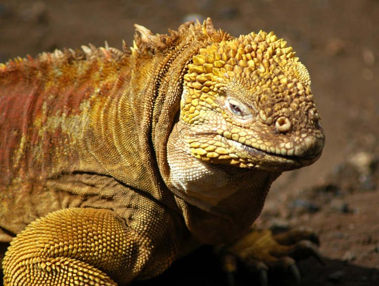

(Lacertilia), krypdyrunderorden i ordenen skjellkrypdyr. Øgler er særlig alminnelige i varmere strøk av Jorden. De har som regel langstrakt kropp og lang hale. De har femtåede, oftest forholdsvis korte lemmer, som hos enkelte kan bli helt redusert (bl.a. stålorm), men i motsetning til slanger beholder de rester av et skulderbelte og brystbein. Hodet er dekket med store plater, kroppen med hornaktige skjell. Øynene har bevegelige øyelokk, og trommehinnen er velutviklet. Størrelsen varierer fra 3 cm til 3 m. Underordenen omfatter 16 nålevende familier med ca. 3800 arter. I tillegg kommer ca. 15 utdødde familier. I Norge har vi to øglearter: stålorm og firfisle (se firfisler). Navnet øgler brukes ofte om forskjellige utdødde krypdyr som ikke er beslektet med Sauria, f.eks. svaneøgler, fiskeøgler og skrekkøgler.
